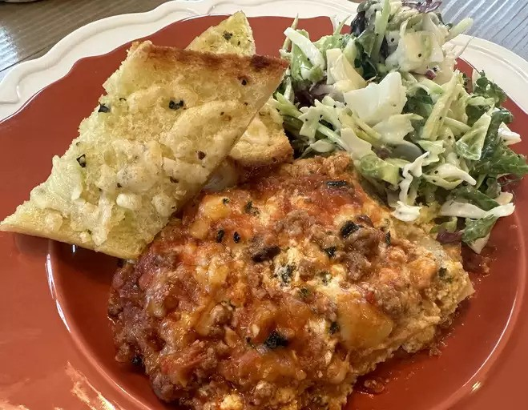

This 4-ingredient orange chicken made with frozen chicken tenders is great for when you’re craving takeout. It’s so simple to make at home, is very budget-friendly, and only takes 4 ingredients. I serve it over rice, topped with green onions and sesame seeds.
Ingredients
Meat Sauce
- 1 ½ pounds lean ground beef
- 1 pound bulk Italian sausage
- 1 (8 ounce) package fresh mushrooms, coarsely chopped
- 1 teaspoon salt
- ½ teaspoon freshly ground black pepper
- ½ teaspoon Italian seasoning (Optional)
- ¼ teaspoon red pepper flakes
- 6 cups prepared marinara sauce
- ¼ cup water, or as needed (Optional)
Pasta
- 1 ½ pounds lean ground beef
Ricotta Filling:
- 2 large eggs
- 2 pounds whole-milk ricotta cheese
- 8 ounces fresh mozzarella cheese, diced
- ⅔ cup freshly grated Parmigiano-Reggiano cheese
- ¼ cup chopped fresh parsley
- 1 teaspoon salt
- ¼ teaspoon freshly ground black pepper
- 1 pinch cayenne pepper, or to taste
Cheese Topping:
- 4 ounces fresh mozzarella cheese, diced
- ½ cup freshly shredded Parmigiano-Reggiano cheese
Steps
- Make the sauce: Cook and stir ground beef and sausage in a large saucepan over medium heat until browned and crumbly, about 10 minutes. Stir in mushrooms, salt, black pepper, Italian seasoning, and pepper flakes. Increase the heat to medium-high and cook until mushrooms have given off their juices and the bottom of the pan is almost dry, 4 to 6 minutes.
- Pour marinara sauce into meat mixture. (If using jarred sauce, add a little water to each jar and shake to get all sauce out of the jar; add to meat mixture.) Reduce the heat to low and simmer until meat is extremely tender, about 2 hours; add more water if sauce becomes too thick. Skim fat, then season sauce with salt and black pepper. Turn off the heat.
- When the sauce is almost finished, make the pasta: Bring a large pot of salted water to a boil. Cook lasagna in the boiling water, stirring occasionally, until cooked through but firm to the bite, about 8 minutes. Drain and rinse lasagna noodles; set aside in a bowl of cold water.
- While the pasta is cooking, make the filling: Whisk eggs in a large bowl, then stir in ricotta, mozzarella, Parmigiano-Reggiano, parsley, salt, black pepper, and cayenne.
- When the sauce, pasta, and filling are ready, preheat the oven to 375 degrees F (190 degrees C).
- Divide sauce into fourths, noodles into thirds, and filling in half for layering. Layer ingredients in a 10x15-inch baking pan, spreading out to fill the pan, as follows: one part sauce, one part noodles, one part filling. Repeat once more. Add one part sauce, then tap the dish lightly on a sturdy work surface to settle the layers. Continue with one part noodles and one part sauce. Sprinkle remaining fresh mozzarella and Parmigiano-Reggiano over top.
- Cover the baking dish with aluminum foil, making sure it doesn't touch the cheese. Place onto a baking sheet to catch any spills.
- Bake in the preheated oven for 30 minutes. Remove the foil and continue to bake until golden brown and bubbly, 30 to 35 more minutes. Let sit for 20 minutes before serving.
Other Recipe's